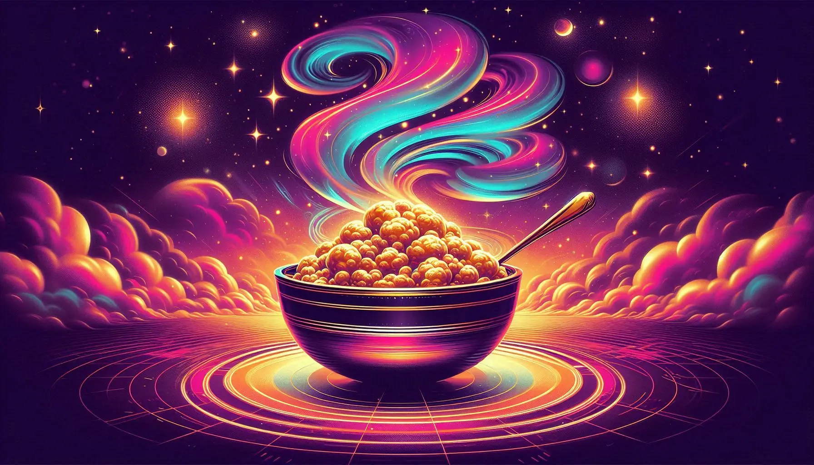
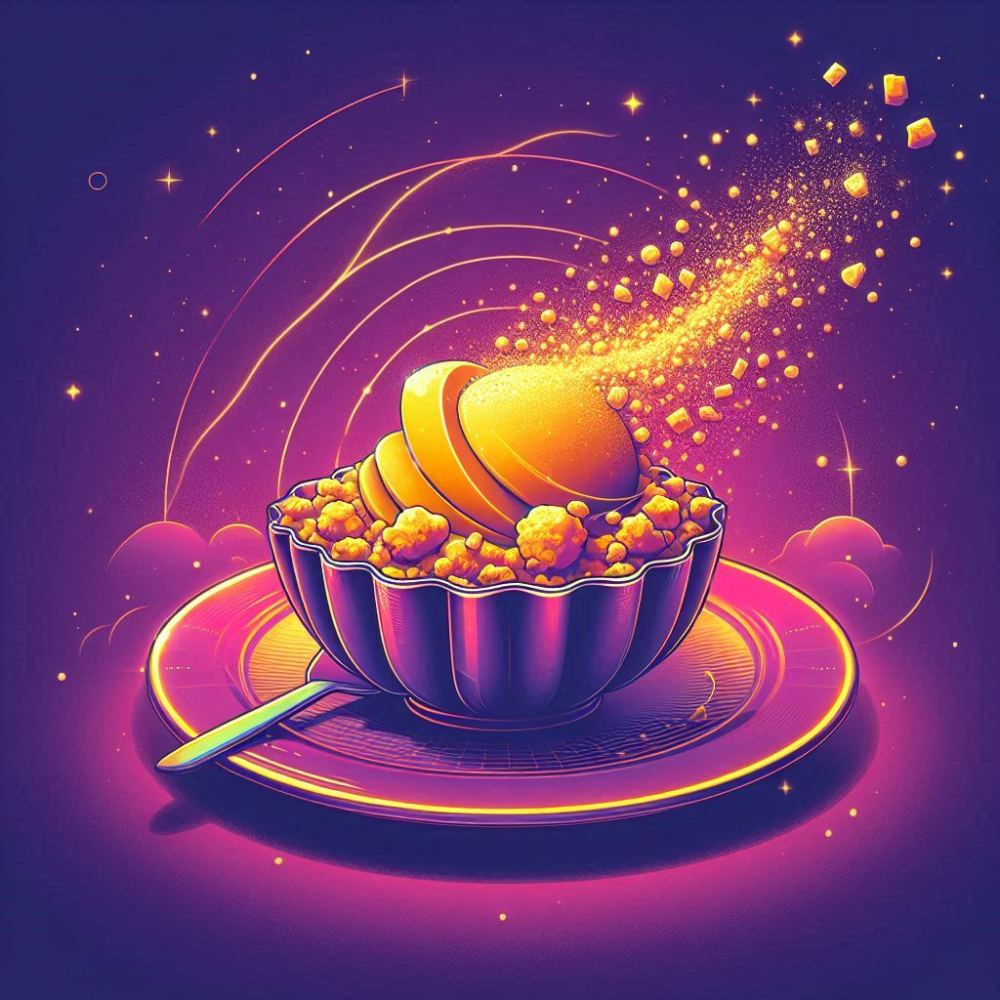
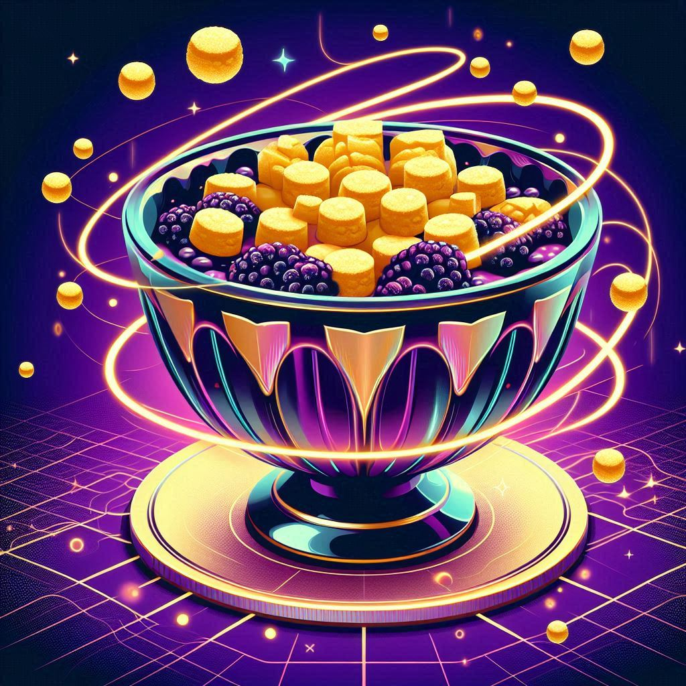

Tangy mango crumble re-imagined with a stardust sugar glaze and meteorite oat clusters.

A tangy mix of black hole blueberries and anti-matter raspberries, suspended in vanilla spacetime.
Bright, zesty lemon curd with a crunchy radiation-safe topping that glows ever so faintly in the dark.
Red planet rhubarb meets interstellar strawberries for an unearthly tang.